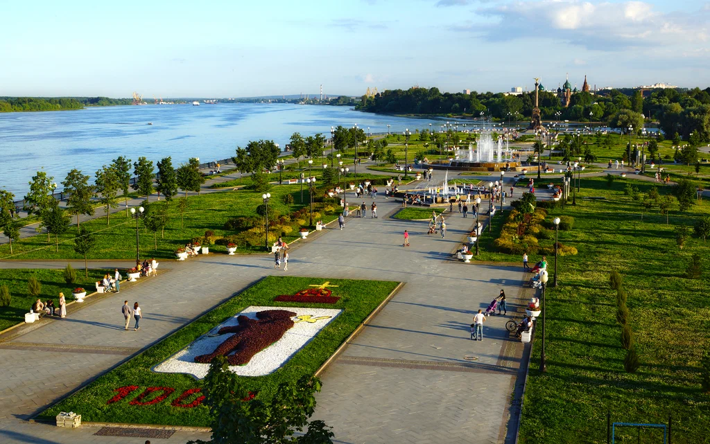
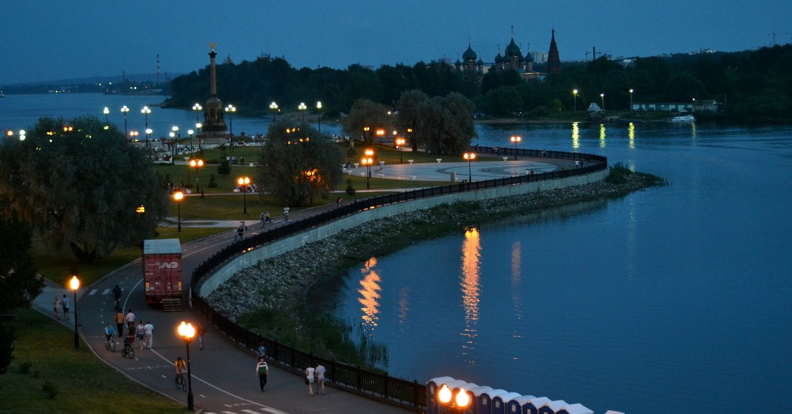

Ярославская Стрелка
Стрелкой в Ярославле называют парк на мысу у слияния рек Которосль и Волги. На аллее,
идущей от Успенского собора и скульптурной композиции «Святая Троица» к смотровой площадке над высоким крутым обрывом
установлен большой серый валун. На нем выбита надпись: «На этом месте в 1010 году Ярослав Мудрый основал Ярославль».
Легенда гласит, что князь зарубил секирой напавшего медведя и в память об этом приказал возвести на этом месте церковь, с которой и началось строительство города.


Современный адрес: Ярославская обл., г. Ярославль, Волжская набережная